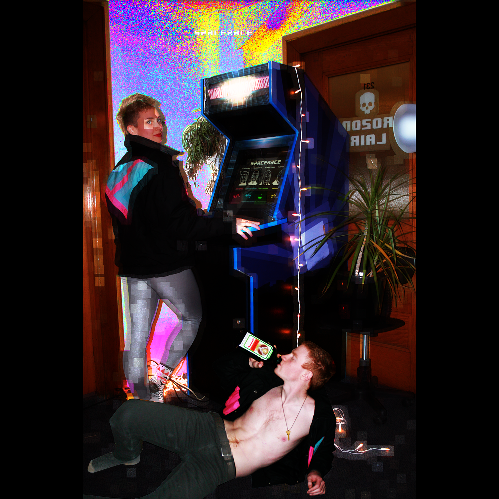
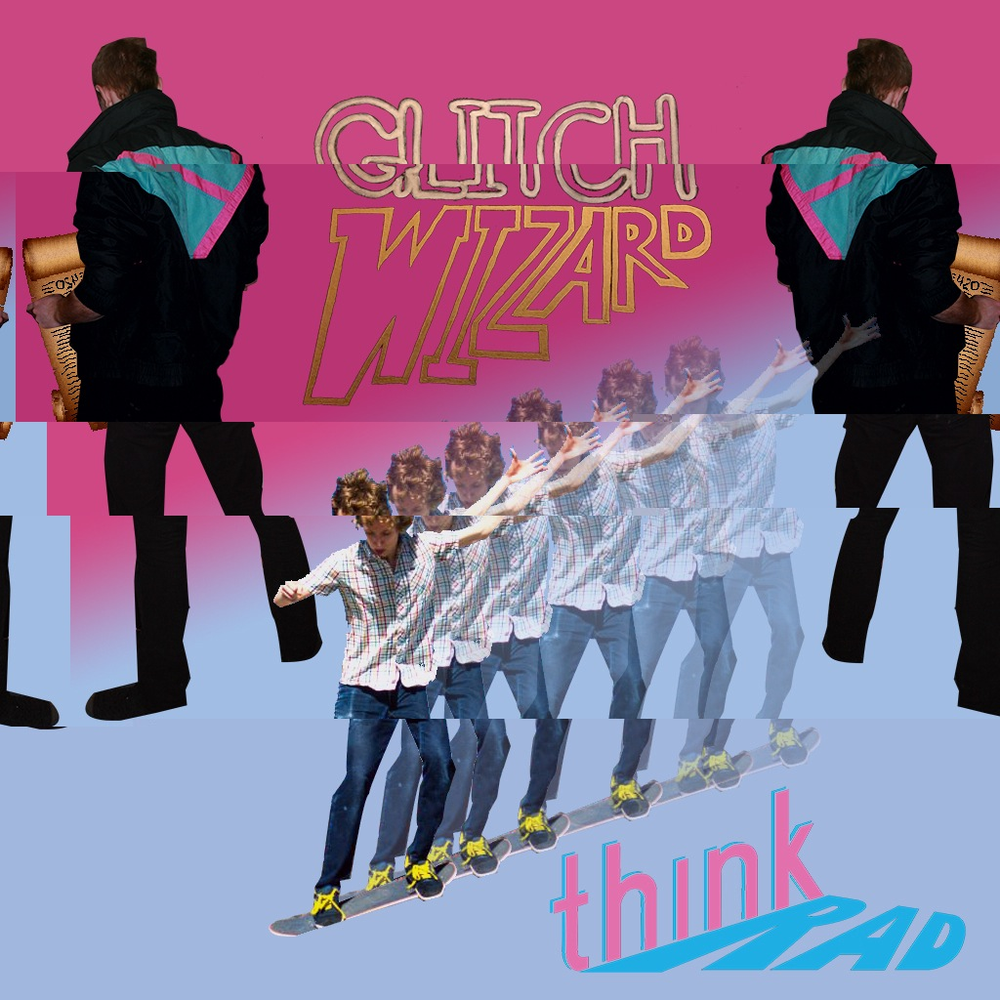

ThinkRad is an independent programming studio, run by Allan Lavell and Connor Bell. We make '80s style games and '90s style apps,
to satisfy the needs of both the nostalgic arcade lover and the modern iPhone haver.
Follow @allanlavell, @connorbellns,
and our tumblr.
SPACERACE

SPACERACE is a 4-player, neon-soaked arcade classic in active development. It has enjoyed beta previews at multiple events, including Bit Bazaar 2014, #IncomingFax and GDC. It has a built a reputation as being casually competitve - anyone can pick it up and learn to play well in a short period of time, but the masters still have their foothold. This makes for some good times and hectic fun. If you want to showcase SpaceRace at your next party, drop us a line.
GLITCHWIZARD

GLITCHWIZARD aims to cast databending into the mainstream, combining elements of social media, image texting and glitching into one gamified iPhone app. Wizards glitch their images out, cast them as spells against other wizards, and have them instantly uploaded to the GLITCHFEED. The glitches viewable on the feed are the result of a private beta we've been running since May 3rd, 2014. Follow @glitchwizard for the latest.